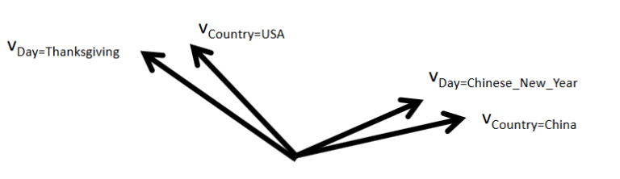
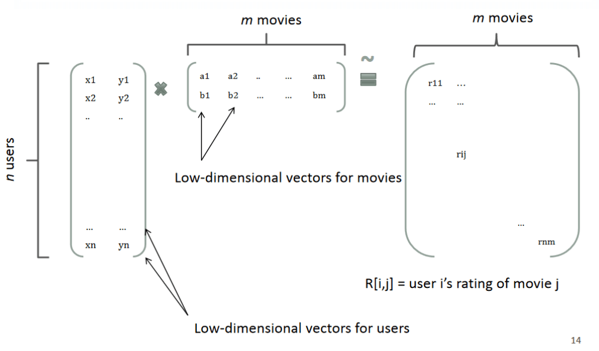
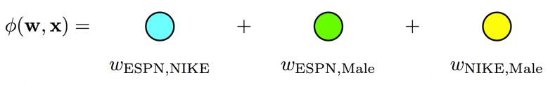
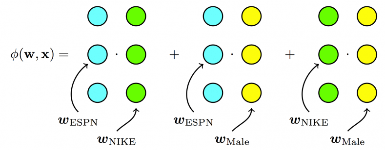
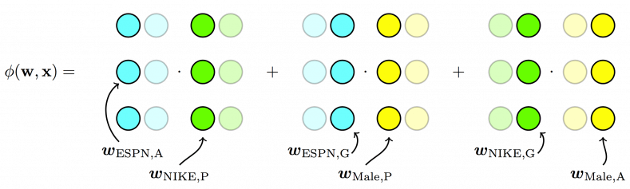
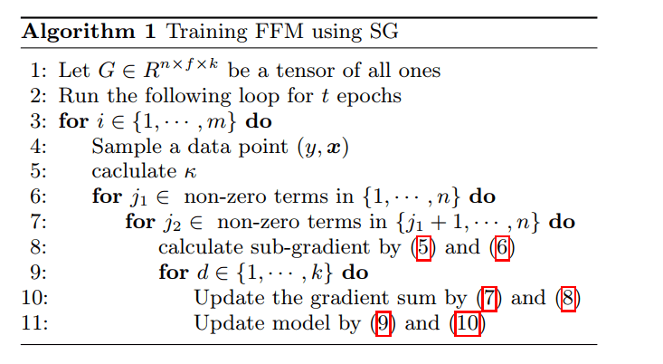
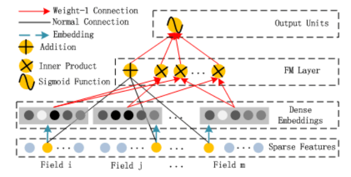
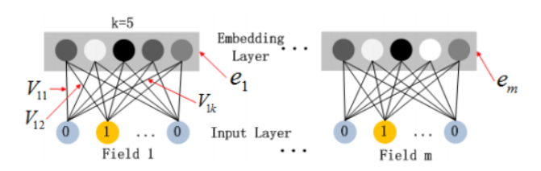
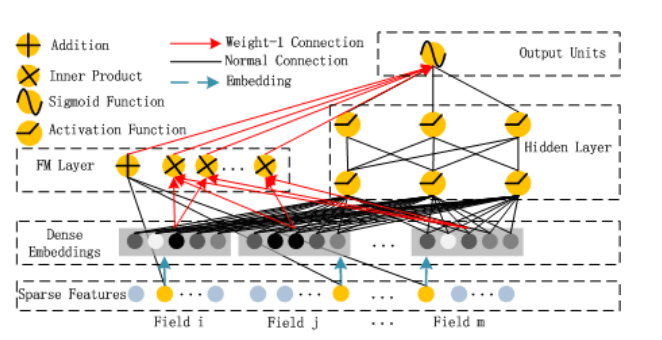
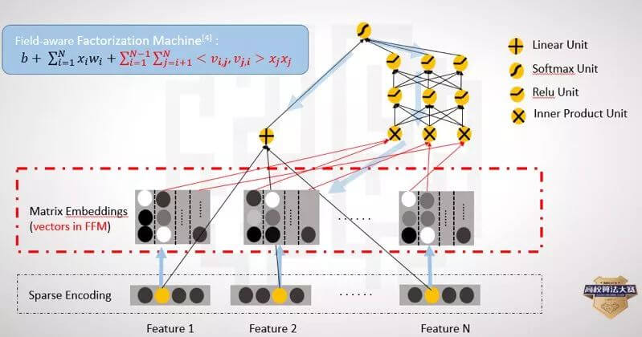

FM和FMM模型在数据量比较大并且特征稀疏的情况下，仍然有优秀的性能表现，在CTR/CVR任务上尤其突出。
近些年来，深度学习的方法也开始应用在广告计算领域，因此本文也会对FM和FFM的深度学习版本做一个介绍。
本文包括：
- FM 模型
- FFM 模型
- Deep FM 模型
- Deep FFM模型
FM模型的引入-广告特征的稀疏性
FM（Factorization machines）模型由Steffen Rendle于2010年提出，目的是解决稀疏数据下的特征组合问题。
在介绍FM模型之前，来看看稀疏数据的训练问题。
以广告CTR（click-through rate）点击率预测任务为例，假设有如下数据：
| Clicked? | Country | Day | Ad_type |
|---|---|---|---|
| 1 | USA | 26/11/15 | Movie |
| 0 | China | 19/2/15 | Game |
| 1 | China | 26/11/15 | Game |
| Clicked? | Country=USA | Country=China | Day=26/11/15 | Day=19/2/15 | Ad_type=Movie | Ad_type=Game |
|---|---|---|---|---|---|---|
| 1 | 1 | 0 | 1 | 0 | 1 | 0 |
| 0 | 0 | 1 | 0 | 1 | 0 | 1 |
| 1 | 0 | 1 | 1 | 0 | 0 | 1 |
此外，往往我们会将特征进行两两的组合，这是因为：
通过观察大量的样本数据可以发现，某些特征经过关联之后，与label之间的相关性就会提高。例如，“USA”与“Thanksgiving”、“China”与“Chinese New Year”这样的关联特征，对用户的点击有着正向的影响。换句话说，来自“China”的用户很可能会在“Chinese New Year”有大量的浏览、购买行为，而在“Thanksgiving”却不会有特别的消费行为。这种关联特征与label的正向相关性在实际问题中是普遍存在的，如“化妆品”类商品与“女”性，“球类运动配件”的商品与“男”性，“电影票”的商品与“电影”品类偏好等。
再比如，用户更常在饭点的时间下载外卖app，因此，引入两个特征的组合是非常有意义的。
如何表示两个特征的组合呢？一种直接的方法就是采用多项式模型来表示两个特征的组合，为第个特征的取值（注意和以往表示第个样本的特征向量的区别），表示特征和的特征组合，其系数即为我们学习的参数，也是组合的重要程度：
式1-1也可以称为Poly2(degree-2 poly-nomial mappings)模型。注意到式子1-1中参数的个数是非常多的！一次项有d+1个，二次项（即组合特征的参数）共有个，而参数与参数之间彼此独立，在稀疏场景下，二次项的训练是很困难的。因为要训练，需要有大量的和都非零的样本（只有非零组合才有意义）。而样本本身是稀疏的，满足的样本会非常少，样本少则难以估计参数，训练出来容易导致模型的过拟合。
为此，Rendle于2010年提出FM模型，它能很好的求解式1-1，其特点如下：
- FM模型可以在非常稀疏的情况下进行参数估计
- FM模型是线性时间复杂度的，可以直接使用原问题进行求解，而且不用像SVM一样依赖支持向量。
- FM模型是一个通用的模型，其训练数据的特征取值可以是任意实数。而其它最先进的分解模型对输入数据有严格的限制。FMs可以模拟MF、SVD++、PITF或FPMC模型。
FM模型
前面提到过，式1-1的参数难以训练时因为训练数据的稀疏性。对于不同的特征对和，式1-1认为是完全独立的，对参数和分别进行训练。而实际上并非如此，不同的特征之间进行组合并非完全独立，如下图所示:

回想矩阵分解，一个rating可以分解为user矩阵和item矩阵，如下图所示：

分解后得到user和item矩阵的维度分别为和，（k一般由用户指定），相比原来的rating矩阵，空间占用得到降低，并且分解后的user矩阵暗含着user偏好，Item矩阵暗含着item的属性，而user矩阵乘上item矩阵就是rating矩阵中用户对item的评分。
因此，参考矩阵分解的过程，FM模型也将式1-1的二次项参数进行分解：
其中是第维特征的隐向量，其长度为。 为内积，其乘积为原来的，即
为了方便说明，考虑下面的数据集（实际中应该进行one-hot编码，但并不影响此处的说明）：
| 数据集 | Clicked? | Publisher | Advertiser | Poly2参数 | FM参数 |
|---|---|---|---|---|---|
| 训练集 | 1 | NBC | Nike | ||
| 训练集 | 0 | EPSN | Adidas | ||
| 测试集 | ? | NBC | Adidas |
对于上面的训练集，没有（NBC，Adidas）组合，因此，Poly2模型就无法学习到参数。而FM模型可以通过特征组合(NBC，Nike)、(EPSN，Adidas) 分别学习到隐向量和，这样使得在测试集中得以进行预测。
更一般的，经过分解，式2-1的参数个数减少为个，对比式1-1，参数个数大大减少。使用小的k，使得模型能够提高在稀疏情况下的泛化性能。此外，将进行分解，使得不同的特征对不再是完全独立的，而它们的关联性可以用隐式因子表示，这将使得有更多的数据可以用于模型参数的学习。比如与的参数分别为：和，它们都可以用来学习，更一般的，包含x_i x_j \ne 0 \and i\ne j的所有样本都能用来学习，很大程度上避免了数据稀疏性的影响。
此外，式2-1的复杂度可以从优化到：
\begin{align*} &\sum_{i=1}^d \sum_{j=i+1}^d \langle \mathbf{v}_i, \mathbf{v}_j \rangle x_i x_j \\ =& \frac{1}{2} \sum_{i=1}^d\sum_{j=1}^d \langle \mathbf{v}_i, \mathbf{v}_j \rangle x_i x_j - \frac{1}{2}\sum_{i=1}^d \langle \mathbf{v}_i, \mathbf{v}_j \rangle x_i x_i\\ =& \frac{1}{2} \sum_{i=1}^d\sum_{j=1}^d\sum_{f=1}^k v_{i,f}v_{j,f} x_i x_j - \frac{1}{2}\sum_{i=1}^d \sum_{f=1}^k v_{i,f}v_{i,f}x_i x_i\\ =& \frac{1}{2} \sum_{f=1}^k \left( \left(\sum_{i=1}^dv_{i,f}x_i \right) \left(\sum_{j=1}^dv_{j,f}x_j \right) - \sum_{i=1}^d v_{i,f}^2x_i^2\right) \\ =&\frac{1}{2} \sum_{f=1}^k \left( \left(\sum_{i=1}^dv_{i,f}x_i \right) ^2 - \sum_{i=1}^d v_{i,f}^2x_i^2\right) \tag{2-2} \end{align*}
可以看出，FM模型可以在线性的时间做出预测。
FM模型学习
把2-2和2-1合并，得到等价的FM模型公式2-3：
FM模型可以使用梯度下降法进行学习，模型的梯度为：
在2-4式中，只与有关而与无关，在每次迭代过程中，可以预先对所有的进行计算，复杂度，就能在常数时间内得到的梯度。而对于其它参数和，显然也是在常数时间内计算梯度。此外，更新参数只需要, 一共有个参数，因此FM参数训练的复杂度也是。
所以说，FM模型是一种高效的模型，是线性时间复杂度的，可以在线性的时间做出训练和预测。
FFM模型
考虑下面的数据集：
| Clicked? | Publisher§ | Advertiser(A) | Gender(G) |
|---|---|---|---|
| 1 | EPSN | Nike | Male |
| 0 | NBC | Adidas | Female |
对于第一条数据来说，FM模型的二次项为：。（这里只是把上面的v符合改成了w）每个特征只用一个隐向量来学习和其它特征的潜在影响。对于上面的例子中，Nike是广告主，Male是用户的性别，描述（EPSN，Nike）和（EPSN，Male）特征组合，FM模型都用同一个，而实际上，ESPN作为广告商，其对广告主和用户性别的潜在影响可能是不同的。
因此，Yu-Chin Juan借鉴Michael Jahrer的论文（Ensemble of collaborative filtering and feature engineered models for click through rate prediction），将field概念引入FM模型。
field是什么呢？即相同性质的特征放在一个field。比如EPSN、NBC都是属于广告商field的，Nike、Adidas都是属于广告主field，Male、Female都是属于性别field的。简单的说，同一个类别特征进行one-hot编码后生成的数值特征都可以放在同一个field中，比如最开始的例子中Day=26/11/15 Day=19/2/15可以放于同一个field中。如果是数值特征而非类别，可以直接作为一个field。
引入了field后，对于刚才的例子来说，二次项变为：
- 对于特征组合（EPSN，Nike）来说，其隐向量采用的是和，对于这是因为Nike属于广告主（Advertiser）的field，而第二项则是EPSN是广告商（Publisher）的field。
- 再举个例子，对于特征组合（EPSN，Male）来说， 是因为Male是用户性别(Gender)的field，而第二项是因为EPSN是广告商（Publisher）的field。
下面的图来自criteo，很好的表示了三个模型的区别
For Poly2, a dedicated weight is learned for each feature pair:

For FMs, each feature has one latent vector, which is used to interact with any other latent vectors:

For FFMs, each feature has several latent vectors, one of them is used depending on the field of the other feature:

FFM 数学公式
因此，FFM的数学公式表示为：
其中和分别代表第i个特征和第j个特征所属的field。若field有个，隐向量的长度为k，则二次项系数共有个，远多于FM模型的个。此外，隐向量和field相关，并不能像FM模型一样将二次项化简，计算的复杂度是。
通常情况下，每个隐向量只需要学习特定field的表示，所以有。
FFM 模型学习
为了方便推导，这里省略FFM的一次项和常数项，公式为：
FFM模型使用logistic loss作为损失函数，并加上L2正则项：
采用随机梯度下降来（SGD）来优化损失函数，因此，损失函数只采用单个样本的损失：
对于每次迭代，选取一条数据，然后让L对和求偏导（注意，采用SGD上面的求和项就去掉了，只采用单个样本的损失），得：
\begin{align*} g_{a,f_b} \equiv \frac{\partial \mathcal{L} }{\partial w_{a,f_b} } = \kappa\cdot w_{b, f_a} x_a x_b + \lambda w_{a,f_b}^2 \tag{3-5} \\ g_{b,f_a} \equiv \frac{\partial \mathcal{L} }{\partial w_{b,f_a} } = \kappa\cdot w_{a, f_b} x_a x_b + \lambda w_{b,f_a}^2 \tag{3-6}\\ 其中, \kappa = \frac{-y}{1+\exp(y\phi({\bf w,x}))} \end{align*}
在具体的实现中，这里有两个trick，第一个trick是梯度的分步计算。
注意到和参数无关，每次更新模型时，只需要计算一次，之后直接调用结果即可。对于总共有个模型参数的计算来说，使用这种方式能极大提升运算效率。
第二个trick是FFM的学习率是随迭代次数变化的，具体的是采用AdaGrad算法，这里进行简单的介绍。
Adagrad算法能够在训练中自动的调整学习率，对于稀疏的参数增加学习率，而稠密的参数则降低学习率。因此，Adagrad非常适合处理稀疏数据。
设为第t轮第j个参数的梯度，则SGD和采用Adagrad的参数更新公式分别如下：
\begin{align*} SGD: \ & w_{t+1,j} = w_{t,j} -\eta \cdot g_{t,j} \\ Adagrad: \ & w_{t+1,j} = w_{t,j} - \frac{\eta}{\sqrt{G_{t,jj}+ \epsilon} } \cdot g_{t,j} \end{align*}
可以看出，Adagrad在学习率上还除以一项，这是什么意思呢？为平滑项，防止分母为0，即为对角矩阵，每个对角线位置的值为参数每一轮的平方和，可以看出，随着迭代的进行，每个参数的历史梯度累加到一起，使得每个参数的学习率逐渐减小。
因此，用3-5、3-6计算完梯度后，下一步就是更新分母的对角矩阵。
\begin{align*} G_{a,f_b} \leftarrow G_{a,f_b} + (g_{a,f_b})^2 \tag{3-7}\\ G_{b,f_a} \leftarrow G_{b,f_a} + (g_{b,f_a})^2 \tag{3-8} \end{align*}
最后，更新模型参数：
\begin{align*} w_{a,f_b} &\leftarrow w_{a,f_b} - \frac{\eta}{\sqrt{G_{a,f_b}+ 1} }g_{a,f_b} \tag{3-9}\\ w_{b,f_a} &\leftarrow w_{b,f_a} - \frac{\eta}{\sqrt{G_{b,f_a}+ 1} }g_{b,f_a} \tag{3-10} \end{align*}
这就是论文中算法1描述的过程：

实现的trick
本小节主要摘录美团点评的内容。
除了上面提到的梯度分步计算和自适应学习率两个trick外，还有：
- OpenMP多核并行计算。OpenMP是用于共享内存并行系统的多处理器程序设计的编译方案，便于移植和多核扩展[12]。FFM的源码采用了OpenMP的API，对参数训练过程SGD进行了多线程扩展，支持多线程编译。因此，OpenMP技术极大地提高了FFM的训练效率和多核CPU的利用率。在训练模型时，输入的训练参数ns_threads指定了线程数量，一般设定为CPU的核心数，便于完全利用CPU资源。
- SSE3指令并行编程。SSE3全称为数据流单指令多数据扩展指令集3，是CPU对数据层并行的关键指令，主要用于多媒体和游戏的应用程序中[13]。SSE3指令采用128位的寄存器，同时操作4个单精度浮点数或整数。SSE3指令的功能非常类似于向量运算。例如，a和b采用SSE3指令相加（a和b分别包含4个数据），其功能是a种的4个元素与b中4个元素对应相加，得到4个相加后的值。采用SSE3指令后，向量运算的速度更加快捷，这对包含大量向量运算的FFM模型是非常有利的。
除了上面的技巧之外，FFM的实现中还有很多调优技巧需要探索。例如，代码是按field和特征的编号申请参数空间的，如果选取了非连续或过大的编号，就会造成大量的内存浪费；在每个样本中加入值为1的新特征，相当于引入了因子化的一次项，避免了缺少一次项带来的模型偏差等。
适用范围和使用技巧
在FFM原论文中，作者指出，FFM模型对于one-hot后类别特征十分有效，但是如果数据不够稀疏，可能相比其它模型提升没有稀疏的时候那么大，此外，对于数值型的数据效果不是特别的好。
在Github上有FFM的开源实现，要使用FFM模型，特征需要转化为“field_id:feature_id:value”格式，相比LibSVM的格式多了field_id，即特征所属的field的编号，feature_id是特征编号，value为特征的值。
此外，美团点评的文章中，提到了训练FFM时的一些注意事项：
第一，样本归一化。FFM默认是进行样本数据的归一化的 。若不进行归一化，很容易造成数据inf溢出，进而引起梯度计算的nan错误。因此，样本层面的数据是推荐进行归一化的。
第二，特征归一化。CTR/CVR模型采用了多种类型的源特征，包括数值型和categorical类型等。但是，categorical类编码后的特征取值只有0或1，较大的数值型特征会造成样本归一化后categorical类生成特征的值非常小，没有区分性。例如，一条用户-商品记录，用户为“男”性，商品的销量是5000个（假设其它特征的值为零），那么归一化后特征“sex=male”（性别为男）的值略小于0.0002，而“volume”（销量）的值近似为1。特征“sex=male”在这个样本中的作用几乎可以忽略不计，这是相当不合理的。因此，将源数值型特征的值归一化到[0,1]是非常必要的。
第三，省略零值特征。从FFM模型的表达式(3-1)可以看出，零值特征对模型完全没有贡献。包含零值特征的一次项和组合项均为零，对于训练模型参数或者目标值预估是没有作用的。因此，可以省去零值特征，提高FFM模型训练和预测的速度，这也是稀疏样本采用FFM的显著优势。
DeepFM
FM模型可以用神经网络进行表示^[3]^：

模型输入，这是一个d维的向量，其中即为第i个field的特征表示，如果是类别，则为one-hot编码后的向量，连续值则为它本身。
然后对每个field分别进行embedding，如下图：

值得注意的是，即使各个field的维度是不一样的，但是它们embedding后长度均为k。
接着FM层即为embedding后结果的内积和一次项的和，最后一层sigmoid后再输出结果。
看到这里，可能你感到困惑的就是embedding层，这么表示是为啥？答案是这样表示和fm模型等价！
假设第i个field 向量维度为k，embedding层的参数可以表示为一个k * m的矩阵
其中可以理解为第a个取值embedding后的结果在隐向量的第b维。
由于进行了one-hot编码，所以对应的只有一个值为1，其余的都为0,假设第c列为1，则：
若两个field做内积，假设非0的那一列为c和d则：
其实和FM模型是一样的！
DeepFM的模型如下图：

左边就是刚才将的FM模型的神经网络表示，而右边的则为deep部分，为全连接的网络，用于挖掘高阶的交叉特征。整个模型共享embedding层，最后的结果就是把FM部分和DNN的部分做sigmoid：
DeepFFM
类似于FFM对于FM模型来说，划分了field，对于不同的field内积时采用对应的隐向量。同样可以把DeepFM进行进化为DeepFFM，即将每一个field embedding为m个维度为k的隐向量（m为field的个数）
可以参考下图（不过下图没有FFM模型二次项的乘积，实际中也可以加上）

参考资料
- Rendle, Steffen. “Factorization machines.” Data Mining (ICDM), 2010 IEEE 10th International Conference on. IEEE, 2010.
- Juan, Yuchin, et al. “Field-aware factorization machines for CTR prediction.” Proceedings of the 10th ACM Conference on Recommender Systems. ACM, 2016.
- Guo, Huifeng, et al. “Deepfm: A factorization-machine based neural network for CTR prediction.” arXiv preprint arXiv:1703.04247 (2017).
- 深入FFM原理与实践
- Factorization Machines
- CTR Prediction: From Linear Models to Field-aware Factorization Machines